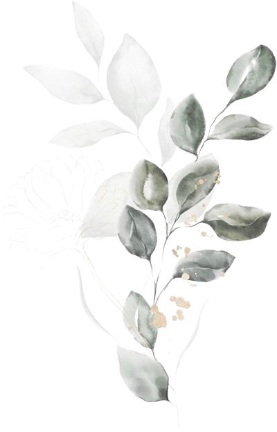
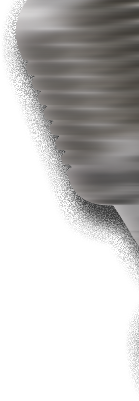
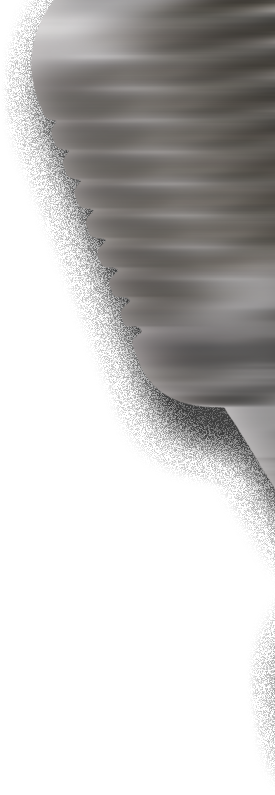

-


 


 Kamis
Kamis
8 Mei 2025Demonstrasi BahasaGUIDEBOOK... -
 Demonstrasi BahasaDemonstrasi Bahasa merupakan salah satu acara dalam rentetan Khutbatu-l-Arsy yang bertujuan menumbuhkan kreativitas, mentalitas, dan ekspresi diri santri sebagai insan berkualitas dan berdedikasi tinggi dalam menjunjung nilai-nilai Islam. Dokumentasi ini hadir sebagai bentuk syukur atas terselenggaranya acara tahun 1446/2025. Segala suka duka telah kami lewati bersama, berkat dukungan dan bimbingan para asatidz yang selalu mendampingi dengan penuh keikhlasan. Kami menyadari, setiap pencapaian selalu dibarengi dengan ruang untuk perbaikan. Estafet kepanitian akan terus berlanjut, dan kami berharap pengalaman ini dapat menjadi cermin dan motivasi bagi adik-adik panitia selanjutnya. Akhir kata, kami ucapkan terima kasih yang sebesar-besarnya kepada para pembimbing dan seluruh pihak yang telah berkontribusi. Mohon maaf atas segala kekurangan dalam pelaksanaan acara ini.(Tim Penyusun Sekretaris Panitia)
Demonstrasi BahasaDemonstrasi Bahasa merupakan salah satu acara dalam rentetan Khutbatu-l-Arsy yang bertujuan menumbuhkan kreativitas, mentalitas, dan ekspresi diri santri sebagai insan berkualitas dan berdedikasi tinggi dalam menjunjung nilai-nilai Islam. Dokumentasi ini hadir sebagai bentuk syukur atas terselenggaranya acara tahun 1446/2025. Segala suka duka telah kami lewati bersama, berkat dukungan dan bimbingan para asatidz yang selalu mendampingi dengan penuh keikhlasan. Kami menyadari, setiap pencapaian selalu dibarengi dengan ruang untuk perbaikan. Estafet kepanitian akan terus berlanjut, dan kami berharap pengalaman ini dapat menjadi cermin dan motivasi bagi adik-adik panitia selanjutnya. Akhir kata, kami ucapkan terima kasih yang sebesar-besarnya kepada para pembimbing dan seluruh pihak yang telah berkontribusi. Mohon maaf atas segala kekurangan dalam pelaksanaan acara ini.(Tim Penyusun Sekretaris Panitia) -
-
Batak
Naterhormat ku ucapkan tu Bapak Pimpinan Pondok.
Naterhormat mule tu para juri natampan tampanon.
Naterhormat tu para hadirin nasonang.
Rohana giot hadir di son.Bismillahirrahmanirrahim
Assalamu'alaikum Warahmatullahi WabarakatuhNapertama-tama ta ucapkan rasa puja dohot puji syukurta tu hadrat Allah SWT.
Na dung malehetta bahat nikmat nia.
Andaikan lautan ibaen tinta batang,
Dibaen pena, nacukup manuliskon sude nikmat na dung dilenen Ia tuhita.
Maka dari itu sepantasna ma hita mangucapkon syukur na sagodang-godangna.Alhamdulillah
Na paduahon salawat beserta salam ta haturkan turuh junjungan alam Nabitta Muhammad SAW.
Allahumma sholli 'ala sayyidinaa Muhammad.
Muhammad nangge aktor namalo maroban motor.
Mato ia maroban unta na mar ekor-ekor nai goyang ebor.
Muhammad adalah pemuda na maioban hita sian alam kegelapan tu alam na terang benderang.Naterakir nangge lupa au mangucapkan tarimokasi tu halak MC dohot juri, madungdilehen ia diau tempat dohot waktu nia sampe bisa au jonjong di jolo hamu sannari.
Adong pe jonjongku dison nangge nagiot manjadi patung, Liberti nangge buse giot mamamerkon muko bope ubotodo tatampan dison.
Tai jonjongku dison giot marpidato sapatah dua patah kata na dipatahkan menjadi marpatah-patah namar judul:SABAR DAN IKHLAS
Sabar adalah makkarejoon pakarejoon dengan lapang dada na mar sungut-sungut.
Ikhlas adalah makkarejoon tanpa mangelep biyaya atau karejoon lupahon.Sude pakarejoon nata karejoon akkon didasari disi dohot sabar dan ikhlas.
Anggo makkarejoon tai da didasari dohot sabar, sia-sia songoni muse ikhlas.
Anggo dapot kamu musibah tai na ikhlas kamu, nadong gunana. Dosa ma naron jadinai.Anggo taligin tu kisah ini, para Nabitta najolo-jolo bisa do taligin kisahni Nabi Ayyub AS.
Diuji Allah bayoi dohot panyakit kusta — panyakit na bau dohot manular.
Harani bau, na diusir ia sian kampung nia sendiri. Istri nia pe harani natahan bauni Nabi Ayyub, kabur buse ia sian bagas nia.
Tai harani sabar dohot ikhlas manghadapi ujiani, sude diangkat Allah ma sian ia panyakit niai.Sohgoni ma sabarni Nabi Ayyub AS. Madi uji dohot anaknia maninggal, sude badan nia panyakit kusta, diusir sian huta nia, kabur muse istri nia.
Maka Allah SWT mangangkat panyakit nia dohot manjanjihon ia surga di akhirat.Maka dari itu sabar ma hita dohot ikhlas manghadapi dunia, sude musibah na di lehen Allah tu hita.
Harana nangge ta bota, bia sekenario ini Allah tu hita.Ingot ma, anggo ro tu hamu musibah, pasti wo do habisi kenikmatan.
إِنَّ مَعَ الْعُسْرِ يُسْرًا
Anggo adong kesusahan, pasti adong kenikmatan.
Maka yakini mai, aso sabar dohot ikhlas hamu manghadapi musibah naro to hamu.Mungkin songoni ma nabisa ku ucapkon, hurang lobi — tarimakasih.
Anggo adong jarum na patah,
Ulaang baen di topi-topi.
Anggo adong bata na salah,
Mohon maaf — tarimo kasi.Ikan teri ikan lele,
Tarimokasih...
Assalamualaikum bieJawa
Kene dadi arek Indonesia kudune bagga nduwe negoro sing damai lan sentosa iki. Soale, negoro iki isok bangkit dari dijajah karo warga-warga asing teko barat. Yo awak dewe kudune saiki urip ndek jaman sing enak lah, soale Indonesia wes merdeka ngunu lho. Dadi sopo seh sing nggelem njajah? Iki Indonesia bos! Kebarengane kuat, ora onok sing iso njebol lan ngerusak. Karo ojok lali, lek misale Indonesia iki nduwe motto yaiku Bersatu kita teguh, bercerai kita runtuh.
Indonesia iki sak durunge mek merdeka, pulau-pulau cilik sing ora nduwe kuasa, sek durung nyatu karo sing liyo. Dadi setiap daerah iku podo mempertahanke daerahne dewe-dewe. Indonesia sisan duwe suku sing akeh, koyok misale: suku Jawa, Batak, Sunda, Bugis, Minahasa, Minangkabau, Dayak, Betawi lan liyane.
Nah, apike Indonesia iki, suku-suku sing aiji koro auku aing liyane iki podo saling tolong-menolong. Dadi lek onok sing kesusahan, awak dewe kudu nolong sing kesusahan, soale Indonesia iki walau berbeda-beda tapi tetap siji arah.
Lah lek aku iki, sepurane, aku wong Jowo, yo karo omahku adek karo Suroboyo. Nah, lek adat neng Jowo iku biasane nggae glonkonon karo klambi adat Jowo. Aku bangga sisan dadi arek Indonesia, soale aku isol nduwe konco-konco sing isok nolong aku lek misale aku butuh ake sesuatu.
Ojok lali sisan nggelek konco sing akeh, ojo karo iku tok ae konsul ae. Iku lho, onok sing teko Maluku, Sulawesi, Kalimantan, karo liyane. Koncomu iku ojok gudug wong Jowo tok. Dadi awak dewe kudu ngeluasake hubungan karo konco-konco dewe teko saiki, mumpung sek ndek pondok.
Koncone akeh, nggelek o sing sakirane isok dadi koncomu sing paling ngerti karo awak dewe, ten hubungane isok sak lawase.
Melayu
Ilmu terlarang, menyesatkan para penuntutnya, mengelirukan para pendengarnya, menaikkan gairah para pencinta ilmu, ilmu yang dilarang ilmuwan Islam dahulu kala.
بسم الله الرحمن الرحيم
الحمد لله رب العالمين، والصلاة والسلام على أشرف الأنبياء والمرسلين، وعلى آله وصحبه أجمعين، أما بعد:Dengan nama Allah yang menciptakan pena dan tinta. Dengan pena dan tinta disampaikan ilmu ke seluruh alam. Saya mulakan pidato ini.
Sholawat dan salam ke atas junjungan Baginda Nabi Muhammad SAW yang mengajarkan manusia seluruh alam arti sebenar kasih dan sayang sehingga dapat kita hidup dengan tenang pada zaman ini.
Ilmu yang digunakan pada zaman dahulu tetapi dilarang oleh Imam besar Ghozali. Ilmu yang boleh membawa kontroversi yang besar dalam umat Islam, yaitu ilmu falsafah. Walau bagaimanapun, ilmu ini bukan ilmu hitam apalah lagi misalkan. Tetapi sebuah ilmu yang mengejar kepada kesejahteraan umat manusia.
Ini dikuatkan lagi dengan maknanya. Falsafah diambil dari bahasa Yunani yang bermaksud “Philo cinta”, manakala sophia bermakna “Kebijaksanaan”. Maka falsafah membawa makna “Mencintai Kebijaksanaan”, “The love and pursuit of wisdom”. Tetapi dalam Yunani klasik, ia tidak sahaja membawa makna pengetahuan. Bahkan, ia meliputi kepada pengenalan kepada kebenaran pertama atau Tuhan.
Socrates mendefinisikan falsafah sebagai refleksi diri (self reflection) terhadap asas dari kehidupan yang adil dan bahagia. Ia mencakupi hal material dan non-material.
Sebagai contoh kita mendalami ilmu sains. Kita memahami bahwa setiap ciptaan Allah itu mempunyai satuan ukuran yang spesifik. Tanpa mempelajari Islam pun, pasti wujudnya satu pencipta yang sama pada makhluk-makhluk ini. Ini terbukti dengan kajian “Golden Ratio”, bahwa pada lingkaran pada makhluk di alam semesta mempunyai pencipta yang sama. Seolah-olah meninggalkan jejak bahwa Dia itu wujud.
Sebagai seorang muslim kita akan berpikir, betapa hebatnya Allah, manakala orang kafir akan berpikir siapa sebenarnya Dia.
Pada zaman sekarang ini, ilmu falsafah ini lebih mudah dipahami dengan tokoh-tokoh Islam yang lebih banyak. Ilmu mantiq yang menguatkan pegangan kita terhadap Islam dan ilmu tauhid sebagai pegangan kita. Bahkan dengan ilmu falsafah ini membantu kita lebih mengenal Tuhan kita yang Esa, ialah Allah.
Maka seharusnya kita sebagai umat Islam perlu cuba mendalami banyak ilmu, menjadi seorang ulama multidisiplin, menjadi seorang ulama intelek sebagai tokoh bagi anak-anak muda yang akan datang. Kalau bukan sekarang bila lagi? Kalau bukan kita siapa lagi?
Dengan rendah hati saya menarik diri dari pentas ini. Maafkan saya atas segala salah, silap dari tutur kata dan salah budi. Segala yang baik datang dari Allah dan yang buruk datang dari saya sendiri.
Wassalamualaikum Warahmatullahi Wabarakatuh
Jepang
皆さん、こんばんは。
はじめまして。私の名前はアッヤシュ・アニンディトです。
皆さんとお会いできて嬉しいです。皆さん、インドネシアについて一番よく知られていることは何でしょうか？
インドネシアはアジア大陸とオーストラリア大陸の間にある国で、
二つの地殻プレートにはさまれているため、
「リング・オブ・ファイア（火山帯）」と呼ばれています。その上、インドネシアには広い熱帯雨林があり、
「世界の肺」とも呼ばれています。これ以外にも、インドネシアは
「エメラルド・オブ・エクアター（赤道のエメラルド）」とも言われています。
「エメラルド」とは緑色の美しい宝石で、
「赤道」はインドネシアを横切っている線です。
緑あふれるインドネシアの自然は、
まるでエメラルドのように美しいと言われています。
そのため、「赤道のエメラルド」という愛称で呼ばれています。また、インドネシアは海の中の自然も豊かで、
その中でも有名な場所はパプアにある「ラジャ・アンパット」です。
新しい海の景色や、美しい水中の自然は
多くの観光客を引きつけています。もう一つ、インドネシアについて知ってほしいことがあります。
インドネシアは多くの民族から成り立っているため、
たくさんの言語、民謡、舞踊が存在しています。私は歌うことが大好きなので、
今からジャワの民謡を歌いたいと思います。
聴きたいですか？じゃあ、いきます！いち、に、さん...
♪ グンドゥル・パチュル ♪この「グンドゥル・パチュル」という歌はジャワの歌で、
作詞者はラデン・カイエタヌス・ハルジョスブロトです。私の発表の結論は：
私たちはこの国に誇りを持って、
インドネシアの文化を守り、次の世代へ伝えていかなければなりません。これで私の発表を終わります。
ご清聴ありがとうございました。
Minasan, konbanwa.
Hajimemashite. Watashi no namae wa Ayyasy Anindito desu.
Minasan to oai dekite ureshii desu.Minasan, Indoneshia ni tsuite ichiban yoku shirarete iru koto wa nan deshou ka?
Indoneshia wa Ajia tairiku to Ōsutoraria tairiku no aida ni aru kuni de,
futatsu no chishōban ni hasamarete iru tame,
“Ring of Fire” to yobareteimasu.Sarani, Indoneshia mo hiroi tsuushin ga atte, “Paru-paru Dunia” nihongo de “sekai no hai” to yobareteimasu..
Kore igai ni mo, Indoneshia wa “Emerarudo obu ekueitā” to mo iwareteimasu.
“Emerarudo” wa midori iro no kireina hōseki de,
“ekueitā” wa Indoneshia o yokogitte iru sen desu.
Midori shigeru Indoneshia no shizen wa, zamurudo no yō ni utsukushii to iwarete imasu.
Sore de, “Zamurudo Khatulistiwa” to no aijō de yobareteimasu.Mata, Indoneshia wa umi no naka no shizen mo yutakade,
sono naka demo yūmeina basho wa Papua ni aru “Raja Ampat” desu.
Aratana umi no keshiki ya, kireina suichū no shizen wa
ōku no kankōkyaku o hikkite imasu.Mō hitotsu, Indoneshia ni tsuite shitte hoshii koto ga arimasu.
Indoneshia wa ōku no minzoku kara narite iru tame,
taku-san no gengo, minyō, buyō ga sonzai shiteimasu.Watashi wa uta ga daisuki nanode,
ima kara Jawa no minyō o utaitai to omoimasu.
Kikitai desu ka? Jā, ikimasu! Ichi, ni, san...
♪ Gundul pacul... ♪Kono “Gundul Pacul” to iu uta wa Jawa no uta de,
sakushisha wa Raden Cajetanus Hardjosoebroto desu.Watashi no happyō no kekka wa:
watashitachi wa kono kuni ni hokori o mochite,
Indoneshia no bunka o mamori, tsugi no sedai e tsutaete ikanakereba narimasen.Kore de watashi no happyō o owari ni shimasu.
Doumou arigatō gozaimashita.Batak
Naterhormat ku ucapkan tu Bapak Pimpinan Pondok.
Naterhormat mule tu para juri natampan tampanon.
Naterhormat tu para hadirin nasonang.
Rohana giot hadir di son.Bismillahirrahmanirrahim
Assalamu'alaikum Warahmatullahi WabarakatuhNapertama-tama ta ucapkan rasa puja dohot puji syukurta tu hadrat Allah SWT
Na dung malehetta bahat nikmat nia.
Andaikan lautan ibaen tinta batang,
Dibaen pena, nacukup manuliskon sude nikmat na dung dilenen Ia tuhita.
Maka dari itu, sepantasna ma hita mangucapkon syukur na sagodang-godangna.Alhamdulillah
Na paduahon salawat beserta salam ta haturkan turuh junjungan alam Nabitta Muhammad SAW.
Allahumma sholli ‘ala sayyidinaa Muhammad.
Muhammad nangge aktor namalo maroban motor,
Mato ia maroban unta na mar ekor-ekor nai goyang ebor.
Muhammad adalah pemuda na maioban hita sian alam kegelapan tu alam na terang benderang.Naterakir nangge lupa au mangucapkan tarimokasi tu halak MC dohot juri
Madungdilehen ia diau tempat dohot waktu nia, sampe bisa au jonjong di jolo hamu sannari.
Adong pe jonjong ku dison nangge nagiot manjadi patung. Liberti nangge buse giot mamamerkon muko bope ubotodo tatampan dison.
Tai jonjongku dison giot marpidato sapatah dua patah kata na dipatahkan menjadi marpatah-patah namar judul.Batak
Naterhormat ku ucapkan tu Bapak Pimpinan Pondok.
Naterhormat mule tu para juri natampan tampanon.
Naterhormat tu para hadirin nasonang.
Rohana giot hadir di son.Bismillahirrahmanirrahim
Assalamu'alaikum Warahmatullahi WabarakatuhNapertama-tama ta ucapkan rasa puja dohot puji syukurta tu hadrat Allah SWT
Na dung malehetta bahat nikmat nia.
Andaikan lautan ibaen tinta batang,
Dibaen pena, nacukup manuliskon sude nikmat na dung dilenen Ia tuhita.
Maka dari itu, sepantasna ma hita mangucapkon syukur na sagodang-godangna.Alhamdulillah
Na paduahon salawat beserta salam ta haturkan turuh junjungan alam Nabitta Muhammad SAW.
Allahumma sholli ‘ala sayyidinaa Muhammad.
Muhammad nangge aktor namalo maroban motor,
Mato ia maroban unta na mar ekor-ekor nai goyang ebor.
Muhammad adalah pemuda na maioban hita sian alam kegelapan tu alam na terang benderang.Naterakir nangge lupa au mangucapkan tarimokasi tu halak MC dohot juri
Madungdilehen ia diau tempat dohot waktu nia, sampe bisa au jonjong di jolo hamu sannari.
Adong pe jonjong ku dison nangge nagiot manjadi patung. Liberti nangge buse giot mamamerkon muko bope ubotodo tatampan dison.
Tai jonjongku dison giot marpidato sapatah dua patah kata na dipatahkan menjadi marpatah-patah namar judul.MapsGedung Olahraga Pondok Modern Darussalam GontorPetunjuk Ke LokasiSisa Momen00Hari00Jam00Menit00DetikWaktu semakin dekat! Jangan lewatkan momen spesial ini. Mari bergabung bersama kami dalam acara Demonstrasi Bahasa ini.GaleriTanda KasihTerima kasih telah meluangkan waktu membaca guidebook ini.
Untuk kenyamanan Anda, silakan unduh guidebook ini melalui tombol di bawah.Merupakan kebahagiaan dan kehormatan bagi kami, apabila Anda berkenan hadir dan menikmati rangkaian acara Demonstrasi Bahasa ini bersama kami.Hormat Kami panitiaDemonstrasi Bahasa